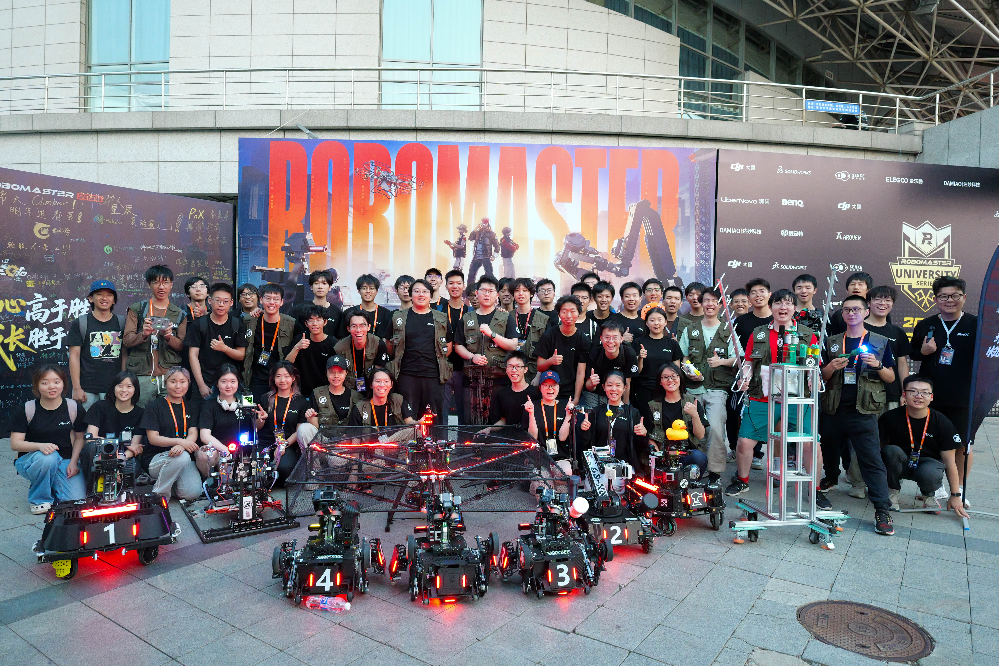
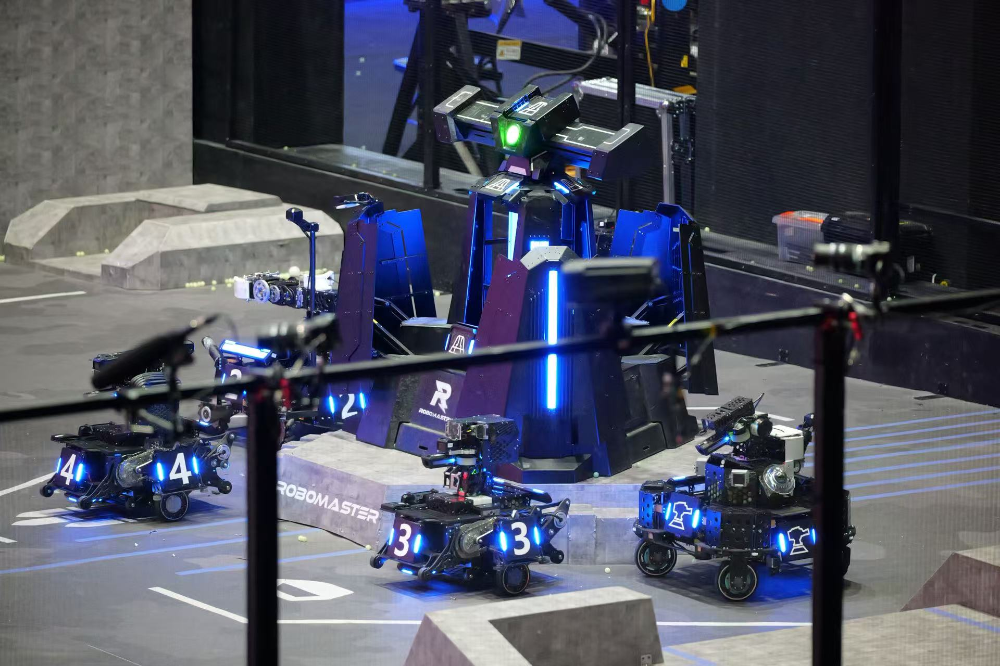
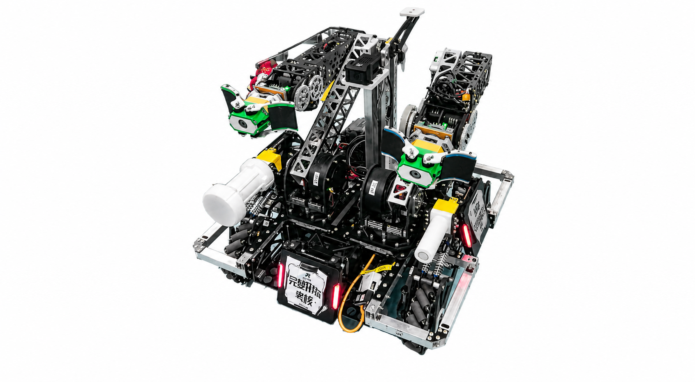
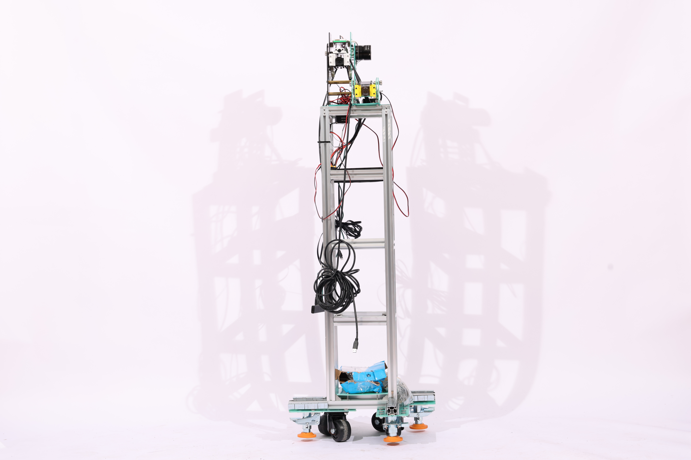
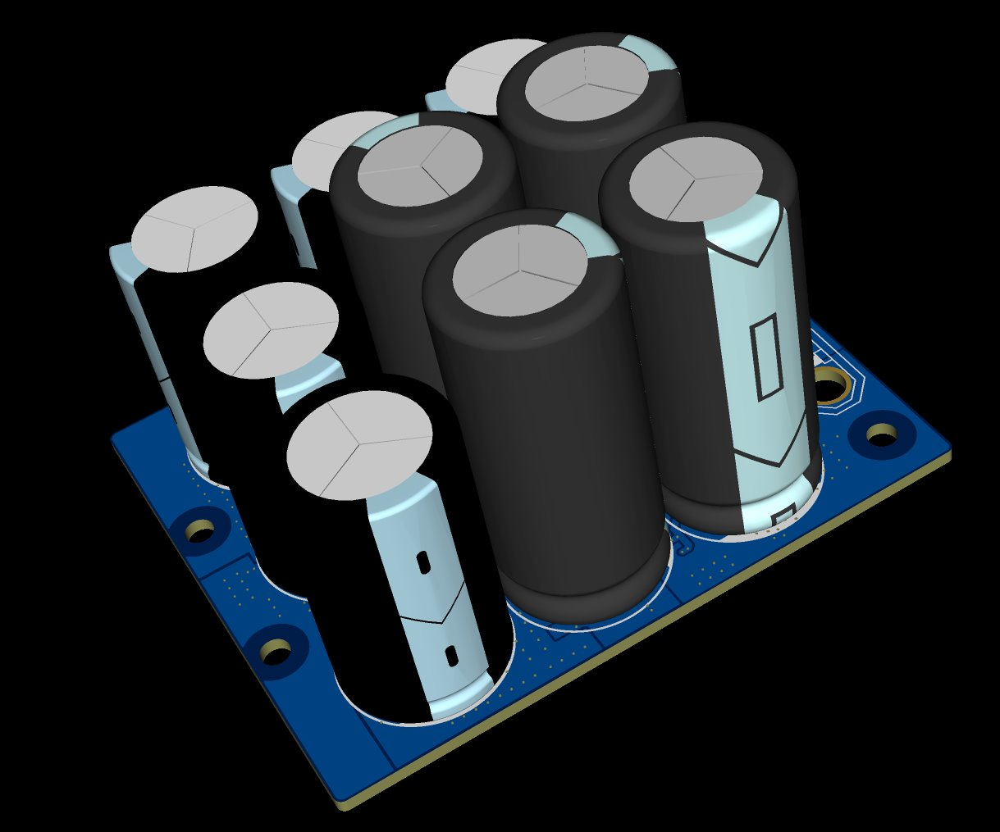
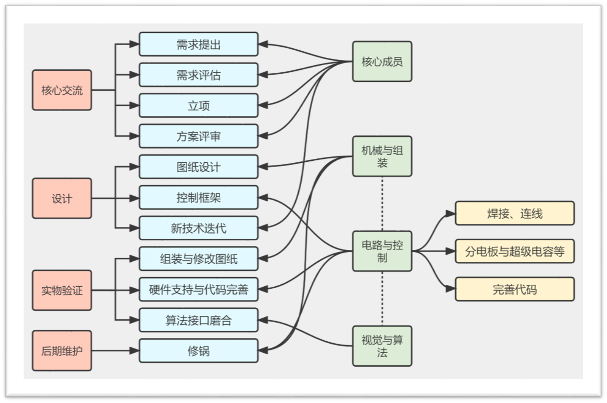

英雄
苍穹之锤
- 发射42mm大弹丸
- 兼具远程吊射与近战速杀能力，一发命中达到150点-300点伤害
- 对发射机构精准度具有很高的要求

RoboMaster介绍


RoboMaster 承载了大疆对于未来人才的想象和期望，致力于培养勇于创新、追求极致、崇尚实干、具备视野和远见的青年工程师。
截至目前，已有超过 1000 位参与过 RoboMaster 机甲大师赛的优秀人才入职大疆，成为大疆推动科技发展的中坚力量。与此同时，更多从 RoboMaster 成长起来的机甲大师们正成为各行业的中流砥柱，汇入国家科技创新的滚滚浪潮之中。
鉴于参与 RoboMaster 的同学们在赛事中展现了超高的技术热情和专业能力，大疆开设了 RoboMaster 专属招聘通道。
战队介绍



兵种组介绍
成为历史的兵种
英雄


无人机

传统兵种
步兵


哨兵

飞镖

雷达

自定义客户端

全新兵种
重装
无人机
操作手阵容
技术组介绍
组织架构


机械组
“所有的代码都需要躯体去执行，所有的战术都需要坚甲去承载。在机械组，我们不讨论如果，我们只负责创造。”
简单来说，我们是整个战队的基石。
我们会将脑海里面天马行空的创造力，变成摆在眼前的，看上去令人叹为观止的钢铁巨兽。
我们的工作，包括但不限于：
我们在寻找怎样的“头号玩家”？
不需要你现在就是全知全能的大神，但是如果你对于机械结构有天然的痴迷，脑洞打开，能够想出很多天马行空的想法，极致的行动派，动手能力强，那么机械组欢迎你的加入！
当然如果是纯小白也是完全不用担心，要相信我们机械组的培训，我们会把你们培养成老练的机械人
硬件组

硬件组究竟是干嘛的？
我先来给大家画一个饼，当你成为一个牛逼的硬件之后，你可以
其中涉及到的有原理图绘制，pcb板的layout，发加工，焊接，测试这几个过程。
你将了解的是市面上电子产品的底层运行平台的设计，从此之后看着电脑主板你将有无上的崇拜。
在队伍中我们现在主要负责的有 ：
电控组
电控组，也会被称为嵌入式组
我们的工作可以理解为搭建硬件与算法的桥梁。主要工作是通过单片机程序的编写，控制机器人实现基本的运动、基本的通信，包括驱动电机、运动与姿态解算、与裁判系统进行通信、机器人各个状态控制等。
当然在备赛和比赛的过程中，电控的工作还包括焊一些不需要惊动硬件的线、和机械与硬件完成整车布线，以及非常重要的和视觉联调车的各个功能。
电控组的工作可以分为嵌入式和控制两大类，大部分工作集中在嵌入式的开发，普通兵种需要涉及较少量的控制知识，平衡步兵、工程机器人则需要较多的控制和理论知识。

算法组
算法组的主要工作为在高性能平台（minipc）上处理来自于相机/激光雷达的数据，并且与电控组负责的下位机进行通信实现对于整机的控制。
如果电控组的任务是构筑机器人的小脑的话，算法组则是构筑机器人的大脑。无论是编写辅助瞄准的“外挂”，实现对战场全局空间的感知，完成智能兵种的全局自主决策，都是算法组的任务。不过需要强调，算法组的队员不止需要熟练掌握先进智能的算法，更需要扎实的项目落地能力：对小电脑与相机等传感器硬件有判断能力，了解其稳定性与能力边界。熟练掌握计算机系统的运作原理，可以临场完成调试检修工作。
算法组主要方向：
在算法组中，你将会学会：
软件组（筹）
新建文件夹中。
软件组的主要工作为完善队内软件，包括自定义客户端，模拟器，以及管理系统等
宣运组
宣运组是战队连接赛场与外界的窗口，也是支撑战队长期运转的重要力量。从一场比赛的摄影记录，到一篇推文的策划与排版；从招新海报、队服设计，到比赛视频的剪辑；从战队周边的设计制作，到经费记录、物资采购与报销管理——这些工作共同构成了宣运组。
我们负责记录战队、展示战队、塑造战队，也让战队能够更加高效、有序地运转。
最主要的工作内容：
01｜公众号及新媒体运营
我们会负责战队微信公众号等平台的内容策划、文案撰写、排版与发布，包括：

02｜B站 / 视频号内容制作
宣运组会负责战队在 Bilibili 或视频号等视频平台上的内容制作，包括：
从前期拍摄，到素材整理、剪辑、字幕、音乐、封面以及最终发布，你可以参与一条视频从原始素材到成片的完整制作过程。

03｜队服与战队周边制作
队服是战队统一形象的重要标志。在校内活动、赛事现场以及对外交流中，统一的队服能够展现良好的精神面貌和团队凝聚力，让战队更具辨识度，也能够有效提升战队的影响力和知名度。
战队周边（如队徽、贴纸、徽章、钥匙扣、亚克力制品等）则是 RoboMaster 赛事文化中不可或缺的一部分。比赛期间，各高校战队之间经常会互相交换周边，这不仅是战队之间友好交流的方式，也是展示战队文化、扩大影响力的重要途径。一份设计精美、富有特色的周边，往往能够让更多人记住我们的战队。
宣运组将负责队服及周边的整体策划与制作，包括创意设计、方案确定、与厂家沟通、打样修改、生产制作以及后续发放等工作。
我们希望找到这样的你：
你不需要入队前就会很多东西
我们更看重的是：
如果你已经会摄影、PS、视频剪辑、绘画设计、视频剪辑、公众号排版，或者有良好的文字功底，社交沟通能力，那当然非常欢迎。
但如果你现在什么都不会也完全可以从零开始。宣运组期待你的加入
大致安排

老队员分享
我想先说一句可能不那么像“招新宣传”的话：
RoboMaster 不一定会给你一个奖，但它几乎一定会给你留下点东西。
如果你只是想找一个周期短、容易拿奖、方便写进简历的比赛，那我其实不一定推荐 RoboMaster。
但如果你真的喜欢机器人，愿意花时间，把一个一开始根本不能用的东西，一点点做到能跑、能打、最后真的站上赛场，那我非常推荐你留下来。
先劝退一下：RoboMaster 真的很累
RoboMaster 的周期很长。
它不是准备两三个星期、交一个作品就结束的比赛。一个赛季可能持续大半年甚至更久。一台机器人会不断经历设计、加工、装配、调试、返工，甚至整个方案推翻之后重新来过。
到了比赛前，你大概率会经历熬不完的夜，也可能调了一整个晚上，最后发现问题只是一个接头松了、一行代码写错了，或者一个非常简单的机械干涉。
而且最现实的一点是：
你付出了很多，最后也不一定能拿奖。
所以我一直觉得，RM 最重要的门槛其实不是技术。
不是你现在会不会写代码、会不会画图、会不会焊板子。
而是：你是不是真的喜欢这件事，以及你愿不愿意坚持把它做完。
为什么这么累，我们还年年来？
因为 RoboMaster 很接近一次真正的工程项目。
大创也好、电赛也好，都有各自很强的地方。但 RoboMaster 一个非常特殊的地方在于，它会逼着机械、电控、视觉、算法、嵌入式、通信、项目管理这些完全不同方向的人，一起把一个复杂系统真正做出来。
而且这个系统不是做出来展示一下就结束。
它必须长期运行、不断迭代，最后还要真的上场比赛。
所以在这里：
“代码能跑”是不够的。
你的代码得能跑在真正的机器人上；你的机械结构得能加工、能装配；你的电路不仅得通电，还得经历震动、碰撞和长时间运行。
最后比赛的时候，它还不能坏。
这种经历和完成一份课程作业，其实非常不一样。
我第一年，也什么都不会
我自己第一年参加 RM 的时候，其实也是什么都不会。
那时候我刚大一，周围的人都比我厉害，也不像现在一样已经有这么多教程、文档和积累下来的经验。
很多时候，我能做的就是跟着学长，帮忙干一些比较简单的事情。
到了西南站比赛的时候，我其实也解决不了什么特别复杂的问题，更多的时候就是陪着大家一起调车、一起熬夜。
说实话，当时压力也不小。
但是有一个场景，我到现在都还记得。
就是第一次看到自己经手过的机器人真正被搬到赛场上。
可能我只拧过其中几个螺丝，接过几根线，改过一点很小的东西。
但当它真的动起来，真的代表我们的队伍上场的时候——
那种感觉和交完一份课程作业完全不一样。
后来赢下比赛，大家一起在场边欢呼。
现在回头看，我最怀念的甚至不一定是哪一块奖牌，而是那些和一群人一起熬夜、修车、Debug，然后终于看到机器人上场的日子。
从 0 到 1，然后交给下一届
我算是从创队初期就在这里的成员，所以我也比较清楚，这个队伍一路走过来有多不容易。
我们不是一开始就有成熟的机器人，也没有现在这样的技术栈、教程、文档和管理制度。
很多东西，都是一届又一届队员踩过坑以后，慢慢留下来的。
从机器人应该怎么布线、代码怎么组织，到比赛怎么准备、项目怎么管理、下一届新人怎么培养，都是一点一点积累出来的。
所以你们今天加入的时候，起点其实已经比我们当年高很多了。
但同样的，
这个队伍接下来能走到哪里，也已经不是我们这些老队员决定的了。
而是你们。
我们到底想找什么样的人？
最后我特别想讲这一点。
我们不要求你现在就很厉害。
你大一什么都不会，这完全正常。
我第一年也是这样。
不会，可以学；做错了，可以改；进度慢一点，也可以慢慢追。
所以我们并不是在找所谓的“神人”，也不是希望每一个新人一进来就能独立造出一台机器人。
我们真正看重的是另外几件事情。
第一，是合作。
RoboMaster 从来不是一个人能够完成的比赛。
一个人的能力再强，如果不愿意沟通、不愿意配合，也很难真正把一台机器人做好。
团队里当然会有意见不一致，也一定会有争吵。
这很正常。
机械可能觉得电控的线挡路，电控觉得机械没留安装空间，算法觉得硬件性能不够。
真正重要的不是“从来不吵架”，而是争论之后，我们还能不能回到问题本身：
怎么一起把机器人做好。
第二，是我觉得非常重要的一点——Ownership，责任感。
在这里，每个人最终都会负责一些真正属于自己的东西。
可能是一块电路板，一个云台，一套视觉程序，一组通信代码，或者机器人上的某一个机构。
当这个东西出了问题的时候，你不能第一反应永远都是：
“学长，这个怎么办？”
“学长，你教我一下。”
“有没有人直接告诉我答案？”
我们当然会教。
学长会告诉你基本的方法，会带你入门，会帮你分析那些你暂时解决不了的问题。
但我们不是培训班，也不可能像 AI 一样，把每一步答案都事无巨细地送到你面前。
因为真正进入一个工程项目以后，很多问题本来就是没有标准答案的。
你需要自己查资料、看文档、做实验、Debug，先尝试解决它；解决不了，再带着你已经尝试过的方案来讨论。
我们希望培养的，不是一个等别人告诉他“下一步做什么”的人，而是一个看到问题以后，会主动想“这个问题我来解决”的人。
这也是我觉得进入大学以后，需要慢慢摆脱的一种“做题思维”。
高中很多时候，我们面对的是一道已经设计好的题目。
有人告诉你题目是什么，知识点是什么，最后还有一个标准答案。
但机器人不是这样。
有时候甚至没有人能够提前告诉你真正的问题到底在哪里。
发现问题、定义问题、找到资料、提出方案、试错，然后把事情做完，本身就是你需要学习的能力。
所以我们不怕你现在不会。
我们真正怕的是，你一直等着别人教你，等着别人催你，最后一个赛季过去了，你还是停留在原地。
当然，除了这些听起来比较理想主义的东西，RM 也有非常现实的价值。
最后你会得到一段非常完整的工程经历。
你不是简单地“学过”某个软件、某种语言或者某块单片机，而是真的设计过、做过、Debug 过、推翻过、迭代过一个复杂的机器人系统。
以后无论是做科研、找实习还是就业，这都是一段能够讲得非常具体的经历。
包括大疆等机器人相关企业，也长期非常认可 RoboMaster 的参赛经历，并针对 RM 参赛人才设有专门的招聘和人才通道。
但我还是想说，这些其实都是结果。
真正重要的是：
几年以后，当你回头看的时候，你会知道大学里曾经有一段时间，你和一群人一起，非常认真地想把一台机器人做好。
所以最后，如果要总结我们到底想找什么样的人：
我们不要求你现在就很强。
但希望你愿意学，愿意合作，愿意负责，也愿意在遇到问题的时候先自己向前走一步。
如果你真的喜欢机器人——
那就留下来。
因为明年站在赛场边，看着自己做出来的机器人上场的人，
可能就是你。
参考资料
图片直播链接
•2026 全国总决赛： https://www.xxpie.com/m/album?id=6a4e2a26a6f44227be62780c&source=SHARE_LINK&r=1766
•2026 赛季区域赛： https://www.xxpie.com/m/album?id=69fca7f595e0d24fcfb46b9b&source=SHARE_LINK&r=2157
•2025 赛季超级对抗赛（包含全国赛、复活赛、区域赛）： https://www.xxpie.com/m/album?id=682164f4c31a8f205c179129&source=SHARE_LINK&r=9682